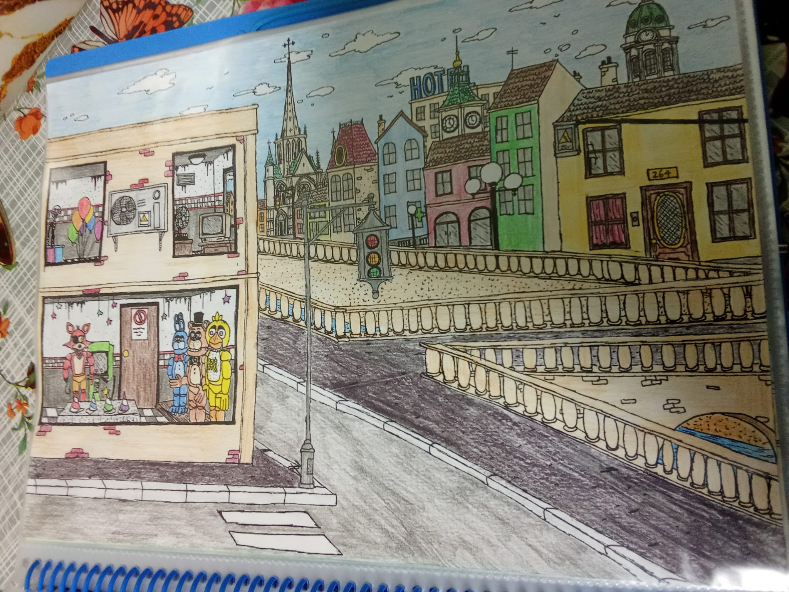
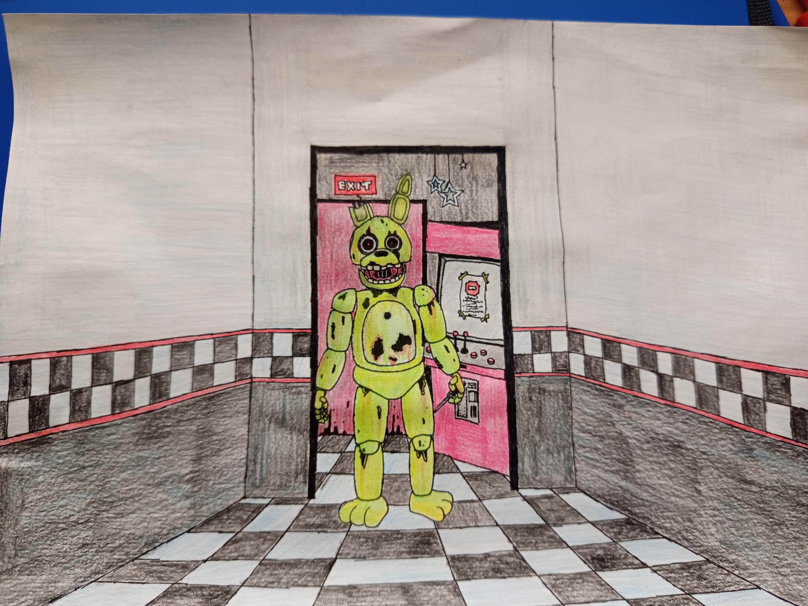

Freddy Fazbear's Pizza was a magical place for kids and grownups alike, were fantasy and fun came to life. It was initially opened in 1960 as a family pizzeria, just like McDonald's had a clown, this restaurant had a brown bear named after Freddy Fazbear. It is unknown who posessed the restaurant, Michael Schmidt stated that it was a cover-up for the malevolent plans of The Blackwood Committee.

The Freddy mascot costume was presumably worn by an actor, back in 1965 the new owner of the restaurant William Afton came up with the incredible idea of bringing robotic endoskelletons technologically advanced to interact with people and act or singing.
One day, William Afton came with another idea, this time to create a sidekick for Freddy, he named it SpringBonnie, a yellow rabbit, this one would perform playing a guitar on stage.
New Characters were brought as part of the attraction, this time a chicken called Chica the chicken and a fox called Foxy would be part of the band. SpringBonnie was discontinued, and a blue version of him would take its place, this time calling Bonnie the Bunny.
On Ocober of 1982, a kid was found dead outside the building in the parking lot, he was invited to a brithday party and its friends fooled him so he could not enter. William Afton stated that Fazbear Entertainment would not be responsible for any damage or injury.
At the "Bring your children to work" day, 4 kids went missing. Two of them were supposed to return home when its father left William Afton in charge of such a task. Both kids weren't found. William Afton was not sent to prison due to the lack of prooves.
A man expelled from the police went to work here and get another job, the reason of its disappearance is still unknown
Stan McRick, the security guard found the corpses of the missing children inside the robots. He stated that Zack the second engineer killed them and put them inside the robots. Stan was sent to a mental asylum, he got mad that he harmed the caretaker.
William Afton was told to modernize the animatronics in order to make them kid-friendlier than they were, so he bought a whole factory located between Ravenford and London. However tha place was shut down due to William Afton being missing forever.
A group of teenagers went inside the old location, they wanted to revive the past of the restaurant and build some kind of a house of terror, after collecting itens and props of the pizzeria thay found an extra animatronic, the extra animatronic was SpringBonnie now being a bit withered because of the time. However the attraction got on fire only 2 weeks before opening. Nevertheless, Phil and its firends restarted de project again, but this time using the old diner instead of spending another fortune in a new building. Unfortunately they could not get rid of the toxic gas that the place caught after a long closure.

The old diner was finally demolished due to Kevin Rodney the security guard being killed by one of these robots. Anyway the early mentioned teenagers came up with a protest because the decision was taken so soon, they gave the teenagers one last chance, naming the park after "Fazbear Fantasy Land" and this time including 2 new characters.